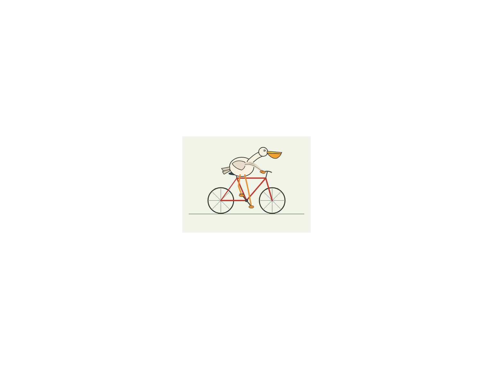

iter 0 0.70 runtime oktouched 1
intent
Render the pelican and bicycle together, ensuring the pelican's distinctive features (long beak, throat pouch, large body) and the bicycle's components (two similar wheels, frame, handlebars) are clearly visible, with the pelican positioned as if actively pedaling.
judge critique
The pelican's riding posture is incorrect (upright instead of leaning forward) and the feet are missing from the pedals, breaking the core 'pedaling' interaction. The most impactful next change is to redraw the pelican's legs to connect clearly to the pedal cranks and adjust the body angle to lean forward over the handlebars.
runtime check
artifact.svg parses as XML
commit
iter/0: view diff
ff94d550